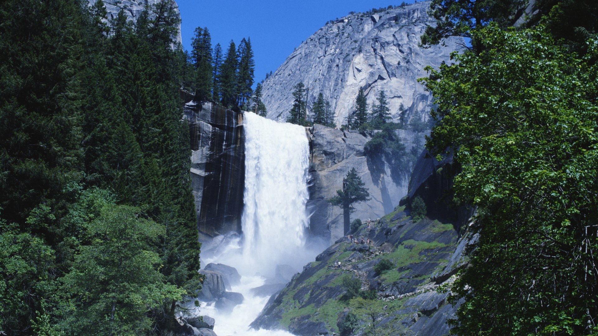

Yosemite
Yosemite National Park lies in the heart of California. With its 'hanging' valleys, many waterfalls, cirque lakes, polished domes, moraines and U-shaped valleys, it provides an excellent overview of all kinds of granite relief fashioned by glaciation. At 600— 4,000 m, a great variety of flora and fauna can also be found here. -UNESCO
- Southwest Airport Suggestion: San Francisco, CA (SFO)
- Drive Time: 3hr 58min
Travel Info
Yellowstone

The vast natural forest of Yellowstone National Park covers nearly 9,000 km squared; 96% of the park lies in Wyoming, 3% in Montana and 1% in Idaho. Yellowstone contains half of all the world's known geothermal features, with more than 10,000 examples. It also has the world's largest concentration of geysers (more than 300 geysers, or two thirds of all those on the planet). Established in 1872, Yellowstone is equally known for its wildlife, such as grizzly bears, wolves, bison and wapitis. -UNESCO
- Southwest Airport Suggestion: Salt Lake City, UT (SLC)
- Drive Time: 4hr 54min
Travel Info
Grand Canyon

Carved out by the Colorado River, the Grand Canyon (nearly 1,500 m deep) is the most spectacular gorge in the world. Located in the state of Arizona, it cuts across the Grand Canyon National Park. Its horizontal strata retrace the geological history of the past 2 billion years. There are also prehistoric traces of human adaptation to a particularly harsh environment. -UNESCO
- Southwest Airport Suggestion: Phoenix, AZ (PHX)
- Drive Time: 3hr 33min
Travel Info
Glacier

In 1932 Waterton Lakes National Park (Alberta, Canada) was combined with the Glacier National Park (Montana, United States) to form the world's first International Peace Park. Situated on the border between the two countries and offering outstanding scenery, the park is exceptionally rich in plant and mammal species as well as prairie, forest, and alpine and glacial features. -UNESCO
- Area: acres
- Visitors: (in 2017)
- Southwest Airport Suggestion: Spokane, WA (GEG)
- Drive Time: 4hr 44min
Travel Info
Zion
The Virgin River cuts through the sandstone on her journey home, taking with her rocks and pebbles, widening and reshaping the canyons that define Zion. The intensity of the colors–the vivid ruby of the rocks, the clear sapphire of the sky, the emerald of the grass–make Zion National Park a treasure of the West. Utah’s first national Park, Zion offers hiking, camping, backpacking, climbing, and more, making it a popular summer vacation spot for families and adventurers. -National Parks Foundation
- Southwest Airport Suggestion: Las Vegas, NV (LAS)
- Drive Time: 3hr 2min
Travel Info
Grand Teton

Tall and proud, the Tetons rise dramatically from the grasslands, cutting through bluest skies and brightest sunrises. Snowcapped in the winter and stark gray in summer, these granite masterpieces are home to all seeking serenity in mountains. Located only 10 miles from Yellowstone National Park, Grand Teton National Park is a stunning national park in Wyoming. -National Parks Foundation
- Southwest Airport Suggestion: Boise, ID (BOI)
- Drive Time: 6hr 30min
Travel Info
Acadia

Venture to the rugged coast of Maine–replete with volcanic rocks and crashing waves, creating the impression of stepping back in time to the creation of Earth. The first national park east of the Mississippi River, Acadia National Park offers hiking, biking, camping, breathtaking views of jagged coastlines, and pristine lakes. -National Parks Foundation
- Southwest Airport Suggestion: Portland, ME (PWM)
- Drive Time: 2 hr 56min
Quick Hits
Olympic
Located in the north-west of Washington State, Olympic National Park is renowned for the diversity of its ecosystems. Glacier-clad peaks interspersed with extensive alpine meadows are surrounded by an extensive old growth forest, among which is the best example of intact and protected temperate rainforest in the Pacific Northwest. Eleven major river systems drain the Olympic mountains, offering some of the best habitat for anadromous fish species in the country. The park also includes 100 km of wilderness coastline, the longest undeveloped coast in the contiguous United States, and is rich in native and endemic animal and plant species, including critical populations of the endangered northern spotted owl, marbled murrelet and bull trout. -UNESCO
- Southwest Airport Suggestion: Seattle, WA (SEA)
- Drive Time: 2hr 58min
Travel Info
Arches
Formed over millennia, the unique features of Arches National Park astonish and delight its many visitors. Find yourself dwarfed amongst the giant archways and delicate rock formations that constantly change with the wind over time. Arches National Park in Moab offers the largest density of natural sandstone arches in the world. Visitors can enjoy biking, camping, rock climbing, and hiking. -National Parks Foundation
- Southwest Airport Suggestion: Salt Lake City, UT (SLC)
- Drive Time: 3hr 36min
Travel Info
Joshua Tree

Long honored, fanciful, and yes, even strange, the Joshua Tree is one of nature’s most peculiar and distinctive creations. Surrender yourself to their mystical qualities in this dreamy California national park. Visitors can explore 800,000 acres of beautiful terrain in Joshua Tree National Park, where wildlife thrives in temperatures over 100 degrees. -National Parks Foundation
- Southwest Airport Suggestion: San Diego, CA (SAN)
- Drive Time: 2hr 56min
Travel Info
Great Smoky Mountains

Stretching over more than 200,000 ha, this exceptionally beautiful park is home to more than 3,500 plant species, including almost as many trees (130 natural species) as in all of Europe. Many endangered animal species are also found there, including what is probably the greatest variety of salamanders in the world. Since the park is relatively untouched, it gives an idea of temperate flora before the influence of humankind. -UNESCO
- Southwest Airport Suggestion: Greenville, SC (GSP)
- Drive Time: 2hr 38min
Travel Info
Mount Rainier

Setting the backdrop for the bustling city below, Mount Rainier sits imposingly on the horizon. It calls to all those seeking the challenge of the climb, the solitude of the woods, the escape from streets and roads. One of the most visited national parks, Mount Rainier is the most prominent peak in the Cascade Range. It’s also one of the oldest national parks. Mount Rainier was established in 1899. At 14,410 feet, it dominates the landscape of a large part of western Washington State. The mountain is several miles taller than the lowlands to the west and one and one-half miles higher than the adjacent mountains! An active volcano, Mount Rainier last erupted approximately 150 years ago. Nearly two million visitors a year come to Mount Rainier National Park for hiking, mountain climbing, backpacking, and more. -National Parks Foundation
- Southweest Airport Suggestion: Seattle, WA (SEA)
- Drive Time: 1hr 26min
Travel Info
Rocky Mountain

Rocky Mountain National Park, established in 1915, is a living showcase of the grandeur of the Rocky Mountains. Located outside Estes Park, Colorado, Rocky Mountain is a great family vacation destination, offering outdoor experiences for all–from easy nature hikes around crystal clear mountain lakes to daring rock scrambles up waterfalls and mountains. Walk in solitude amongst aspens and pines. Open yourself to the serenity of a clear mountain lake. Push past boundaries as you summit a mountain. Take in breathtaking views as far as the eye can see. Watch spectacular sunrises over rocky mountain peaks. Visit the Rockies and experience mountain climbing, hiking, camping, fishing, and breathtaking views of jagged peaks, glaciers, and high-mountain lakes. -National Parks Foundation
- Southwest Airport Suggestion: Denver, CO (DEN)
- Drive Time: 1hr 36min
Travel Info
Bryce Canyon

Pillars of red, white, and orange cut through bluest skies. Erosion and rain constantly evolve nature’s amphitheater at Bryce. Wind your way through the canyons, peaceful, stunning, and immense. Bryce Canyon National Park in Southwestern Utah is famous for the largest collection of hoodoos–the distinctive rock formations at Bryce–in the world. Bryce Canyon is also home to horseshoe–shaped amphitheaters carved from the eastern edge of the Paunsaugunt Plateau, scenic vistas, and the dark night sky. Visitors can expect spectacular hiking, camping, endless outdoor ranger activities, and even a Prairie Dog Festival. -National Parks Foundation
- Southest Airport Suggestion: Salt Lake City, UT (SLC)
- Drive Time: 4hr 1min
Travel Info
Sequoia Nation Park

Meet General Grant at Kings Canyon. Experience the history of our national parks at Sequoia. And in both parks, experience the awe and wonder that comes from being surrounded by the colossal trees that inspired John Muir in his beloved Sierras. Visit the world’s largest trees at Sequoia, America’s second national park. Kings Canyon is also filled with giants, from immense mountains to deep canyons. Located in the southern Sierra Nevada range, the parks’ elevations extend from 1,300 feet in the foothills to 14,491 feet at the summit of Mount Whitney, the highest mountain in the contiguous 48 states. Plunging in the opposite direction, far below the surface, are over 200 marble caverns, many with endemic cave fauna. -National Parks Foundation
- Southest Airport Suggestion: Los Angeles, CA (LAX)
- Drive Time: 3hr 50min